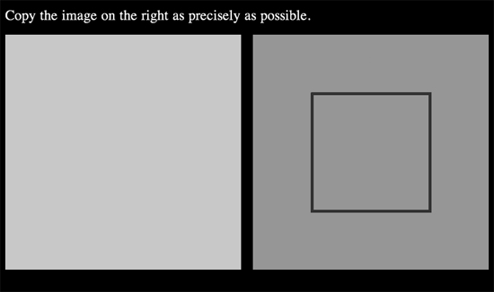
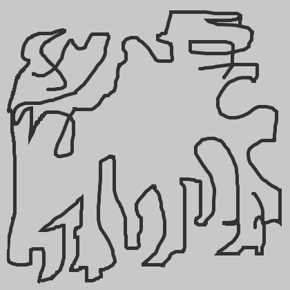
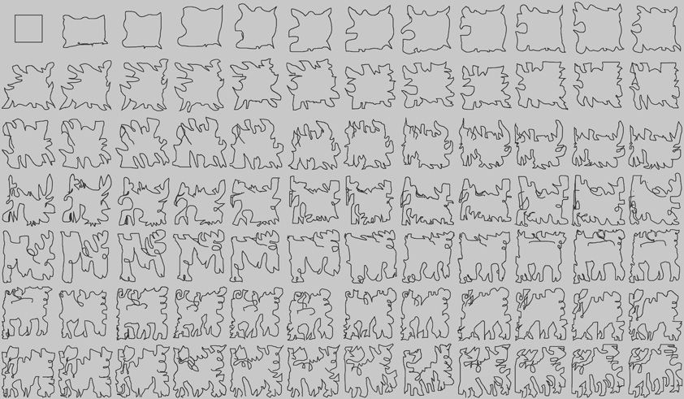

Re:Paint
Re:Paint is an experiment I made using Amazon's Mechanical Turk platform. In this experiment, I gave 84 mechanical turk workers a simple task - "Copy the image on the right as precisely as possible". The workers were given a canvas and a simple pen tool for this task.
The first image to copy was of a plain square. After a worker has completed the task, a new task was automatically posted to mechanical turk with the task of copying the last image that was drawn by the last worker, creating a chain where each turker was promted to replicate the drawing of the previous one.

After 84 workers, this is what I got:

This is the full chain of drawings: 
In this project I tried to use human error as a new form of randomness, using the imperfection of the tools we use, the computer mouse and the trackpad.